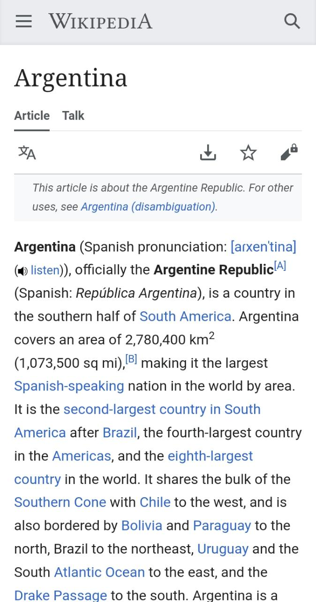

Design Principles Document
Alvaro B. Godoy
Assignment Portal
White Space and Clean Design
Google is a great example of good white space and clean design. The purpose of these things is to guide the user where it needs to focus. Google accomplish this in a meaningful way by putting the most important thing (the search box) in the center of the page and leaving a good white space around it. They know that the search engine is the most important thing and they want their users to focus on that.
Proximity
Mercado Libre
www.mercadolibre.comMercado Libre uses proximity as a way of telling the user what type of products they are looking at. In this case it would be products that have a discount, you can tell that because they are grouped together. They use this same resource to group products or a certain category or price.
You can see at the bottom, there is another section that talks about a monthly subscription, we can differentiate these two because there is a white space between them.
Repetition
Wikipedia
www.wikipedia.com All of us know the typical wikipedia page when we look information in their site. They did a really good job keeping all of their pages similiar in distribution, colors and locations. You can know where to look for references, content, etc. This is accomplished by repeating elements, colors, alignment and distribution.